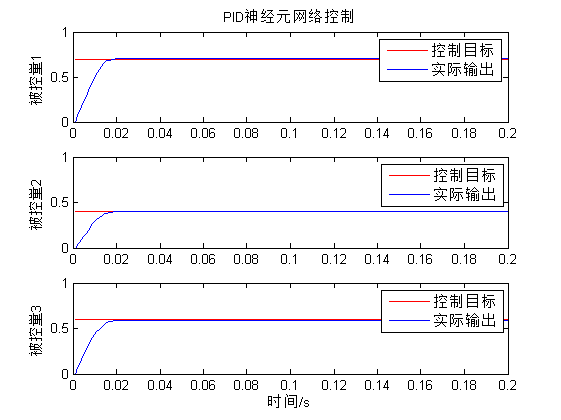
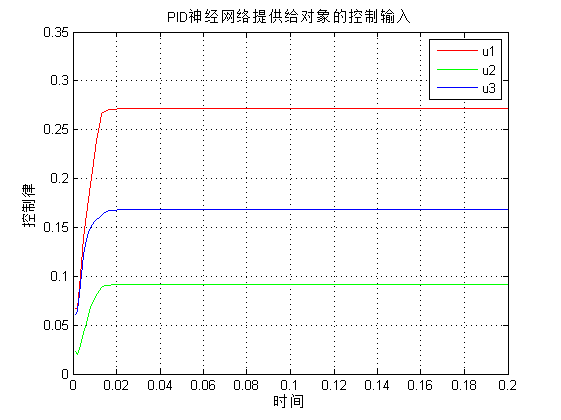
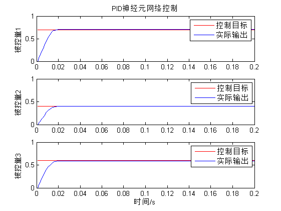
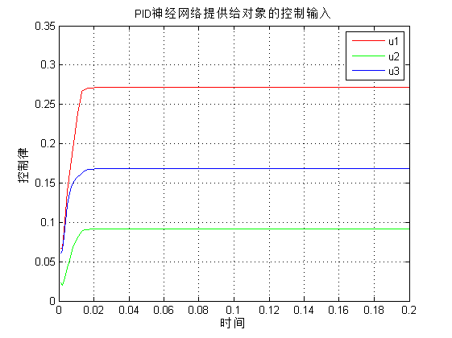

该代码为基于pso算法优化的PID神经网络的系统控制算法
| 该案例作者申明： |
| 1：本人长期驻扎在此板块里，对该案例提问，做到有问必答。本套书籍官方网站为：video.ourmatlab.com |
| 2：点此从当当预定本书：《Matlab神经网络30个案例分析》。 |
3：此案例有配套的教学视频，视频下载方式video.ourmatlab.com/vbuy.html。 |
| 4：此案例为原创案例，转载请注明出处（《Matlab神经网络30个案例分析》）。 |
| 5：若此案例碰巧与您的研究有关联，我们欢迎您提意见，要求等，我们考虑后可以加在案例里。 |
Contents
清空环境变量
clc clear
粒子初始化
%粒子群算法中的两个参数 c1=1.49445; c2=1.49445; %最大最小权值 wmax=0.9; wmin=0.1; %最大最小速度 Vmax=0.03; Vmin=-0.03; %最大最小个体 popmax=0.3; popmin=-0.3; maxgen=50; % 进化次数 sizepop=20; %种群规模 %随机产生一个种群 for i=1:sizepop pop(i,:)=0.03*rand(1,45); %个体编码 fitness(i)=fun(pop(i,:)); %染色体的适应度 V(i,:)=0.003*rands(1,45); %初始化速度 end
初始种群极值
%找最好的染色体 [bestfitness bestindex]=min(fitness); zbest=pop(bestindex,:); %全局最佳 gbest=pop; %个体最佳 fitnessgbest=fitness; %个体最佳适应度值 fitnesszbest=bestfitness; %全局最佳适应度值
迭代寻优
for i=1:maxgen i; for j=1:sizepop w=(wmax-wmin)*(i-1)/(maxgen)+wmin; %权值线性变化 V(j,:)=w*V(j,:) + c1*rand*(gbest(j,:) - pop(j,:)) + c2*rand*(zbest - pop(j,:)); %速度更新 V(j,find(V(j,:)>Vmax))=Vmax; %小于最大速度 V(j,find(V(j,:)<Vmin))=Vmin; %大于最小速度 %种群更新 pop(j,:)=pop(j,:)+0.5*V(j,:); for k=1:45 if rand>0.95 pop(j,k)=0.3*rand; %自适应变异 end end pop(j,find(pop(j,:)>popmax))=popmax; %小于个体最大值 pop(j,find(pop(j,:)<popmin))=popmin; %大于个体最小值 %适应度值 fitness(j)=fun(pop(j,:)); end for j=1:sizepop %个体极值更新 if fitness(j)<fitnessgbest(j) gbest(j,:) = pop(j,:); fitnessgbest(j) = fitness(j); end %全局极值更新 if fitness(j)<fitnesszbest zbest = pop(j,:); fitnesszbest = fitness(j); end end %记录最优适应度值 yy(i)=fitnesszbest; end
最优个体控制
figure(1) plot(yy) title('粒子群算法进化过程'); xlabel('进化代数');ylabel('适应度'); individual=zbest; w11=reshape(individual(1:6),3,2); w12=reshape(individual(7:12),3,2); w13=reshape(individual(13:18),3,2); w21=individual(19:27); w22=individual(28:36); w23=individual(37:45); rate1=0.006;rate2=0.001; %学习率 k=0.3;K=3; y_1=zeros(3,1);y_2=y_1;y_3=y_2; %输出值 u_1=zeros(3,1);u_2=u_1;u_3=u_2; %控制率 h1i=zeros(3,1);h1i_1=h1i; %第一个控制量 h2i=zeros(3,1);h2i_1=h2i; %第二个控制量 h3i=zeros(3,1);h3i_1=h3i; %第三个空置量 x1i=zeros(3,1);x2i=x1i;x3i=x2i;x1i_1=x1i;x2i_1=x2i;x3i_1=x3i; %隐含层输出 %权值初始化 k0=0.03; %值限定 ynmax=1;ynmin=-1; %系统输出值限定 xpmax=1;xpmin=-1; %P节点输出限定 qimax=1;qimin=-1; %I节点输出限定 qdmax=1;qdmin=-1; %D节点输出限定 uhmax=1;uhmin=-1; %输出结果限定 for k=1:1:200 %--------------------------------网络前向计算-------------------------- %系统输出 y1(k)=(0.4*y_1(1)+u_1(1)/(1+u_1(1)^2)+0.2*u_1(1)^3+0.5*u_1(2))+0.3*y_1(2); y2(k)=(0.2*y_1(2)+u_1(2)/(1+u_1(2)^2)+0.4*u_1(2)^3+0.2*u_1(1))+0.3*y_1(3); y3(k)=(0.3*y_1(3)+u_1(3)/(1+u_1(3)^2)+0.4*u_1(3)^3+0.4*u_1(2))+0.3*y_1(1); r1(k)=0.7;r2(k)=0.4;r3(k)=0.6; %控制目标 %系统输出限制 yn=[y1(k),y2(k),y3(k)]; yn(find(yn>ynmax))=ynmax; yn(find(yn<ynmin))=ynmin; %输入层输出 x1o=[r1(k);yn(1)];x2o=[r2(k);yn(2)];x3o=[r3(k);yn(3)]; %隐含层 x1i=w11*x1o; x2i=w12*x2o; x3i=w13*x3o; %比例神经元P计算 xp=[x1i(1),x2i(1),x3i(1)]; xp(find(xp>xpmax))=xpmax; xp(find(xp<xpmin))=xpmin; qp=xp; h1i(1)=qp(1);h2i(1)=qp(2);h3i(1)=qp(3); %积分神经元I计算 xi=[x1i(2),x2i(2),x3i(2)]; qi=[0,0,0];qi_1=[h1i(2),h2i(2),h3i(2)]; qi=qi_1+xi; qi(find(qi>qimax))=qimax; qi(find(qi<qimin))=qimin; h1i(2)=qi(1);h2i(2)=qi(2);h3i(2)=qi(3); %微分神经元D计算 xd=[x1i(3),x2i(3),x3i(3)]; qd=[0 0 0]; xd_1=[x1i_1(3),x2i_1(3),x3i_1(3)]; qd=xd-xd_1; qd(find(qd>qdmax))=qdmax; qd(find(qd<qdmin))=qdmin; h1i(3)=qd(1);h2i(3)=qd(2);h3i(3)=qd(3); %输出层计算 wo=[w21;w22;w23]; qo=[h1i',h2i',h3i'];qo=qo'; uh=wo*qo; uh(find(uh>uhmax))=uhmax; uh(find(uh<uhmin))=uhmin; u1(k)=uh(1);u2(k)=uh(2);u3(k)=uh(3); %控制律 %--------------------------------------网络反馈修正---------------------- %计算误差 error=[r1(k)-y1(k);r2(k)-y2(k);r3(k)-y3(k)]; error1(k)=error(1);error2(k)=error(2);error3(k)=error(3); J(k)=0.5*(error(1)^2+error(2)^2+error(3)^2); %调整大小 ypc=[y1(k)-y_1(1);y2(k)-y_1(2);y3(k)-y_1(3)]; uhc=[u_1(1)-u_2(1);u_1(2)-u_2(2);u_1(3)-u_2(3)]; %隐含层和输出层权值调整 %调整w21 Sig1=sign(ypc./(uhc(1)+0.00001)); dw21=sum(error.*Sig1)*qo'; w21=w21+rate2*dw21; %调整w22 Sig2=sign(ypc./(uh(2)+0.00001)); dw22=sum(error.*Sig2)*qo'; w22=w22+rate2*dw22; %调整w23 Sig3=sign(ypc./(uh(3)+0.00001)); dw23=sum(error.*Sig3)*qo'; w23=w23+rate2*dw23; %输入层和隐含层权值调整 delta2=zeros(3,3); wshi=[w21;w22;w23]; for t=1:1:3 delta2(1:3,t)=error(1:3).*sign(ypc(1:3)./(uhc(t)+0.00000001)); end for j=1:1:3 sgn(j)=sign((h1i(j)-h1i_1(j))/(x1i(j)-x1i_1(j)+0.00001)); end s1=sgn'*[r1(k),y1(k)]; wshi2_1=wshi(1:3,1:3); alter=zeros(3,1); dws1=zeros(3,2); for j=1:1:3 for p=1:1:3 alter(j)=alter(j)+delta2(p,:)*wshi2_1(:,j); end end for p=1:1:3 dws1(p,:)=alter(p)*s1(p,:); end w11=w11+rate1*dws1; %调整w12 for j=1:1:3 sgn(j)=sign((h2i(j)-h2i_1(j))/(x2i(j)-x2i_1(j)+0.0000001)); end s2=sgn'*[r2(k),y2(k)]; wshi2_2=wshi(:,4:6); alter2=zeros(3,1); dws2=zeros(3,2); for j=1:1:3 for p=1:1:3 alter2(j)=alter2(j)+delta2(p,:)*wshi2_2(:,j); end end for p=1:1:3 dws2(p,:)=alter2(p)*s2(p,:); end w12=w12+rate1*dws2; %调整w13 for j=1:1:3 sgn(j)=sign((h3i(j)-h3i_1(j))/(x3i(j)-x3i_1(j)+0.0000001)); end s3=sgn'*[r3(k),y3(k)]; wshi2_3=wshi(:,7:9); alter3=zeros(3,1); dws3=zeros(3,2); for j=1:1:3 for p=1:1:3 alter3(j)=(alter3(j)+delta2(p,:)*wshi2_3(:,j)); end end for p=1:1:3 dws3(p,:)=alter2(p)*s3(p,:); end w13=w13+rate1*dws3; %参数更新 u_3=u_2;u_2=u_1;u_1=uh; y_2=y_1;y_1=yn; h1i_1=h1i;h2i_1=h2i;h3i_1=h3i; x1i_1=x1i;x2i_1=x2i;x3i_1=x3i; end time=0.001*(1:k); figure(2) subplot(3,1,1) plot(time,r1,'r-',time,y1,'b-'); title('PID神经元网络控制'); ylabel('被控量1'); legend('控制目标','实际输出','fontsize',12); subplot(3,1,2) plot(time,r2,'r-',time,y2,'b-'); ylabel('被控量2'); legend('控制目标','实际输出','fontsize',12); axis([0,0.2,0,1]) subplot(3,1,3) plot(time,r3,'r-',time,y3,'b-'); xlabel('时间/s'); ylabel('被控量3'); legend('控制目标','实际输出','fontsize',12); figure(3) plot(time,u1,'r-',time,u2,'g-',time,u3,'b'); title('PID神经网络提供给对象的控制输入'); xlabel('时间'),ylabel('控制律'); legend('u1','u2','u3');grid figure(4) plot(time,J,'r-'); axis([0,0.1,0,0.5]);grid title('网络学习目标函数J动态曲线'); xlabel('时间');ylabel('控制误差'); web browser www.matlabsky.com
Warning: Ignoring extra legend entries. Warning: Ignoring extra legend entries. Warning: Ignoring extra legend entries.
  
  
相关论坛： 《Matlab神经网络30个案例分析》官方网站：video.ourmatlab.com Matlab技术论坛：www.matlabsky.com Matlab函数百科：www.mfun.la Matlab中文论坛：www.ilovematlab.com |